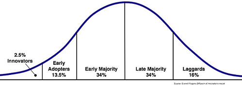
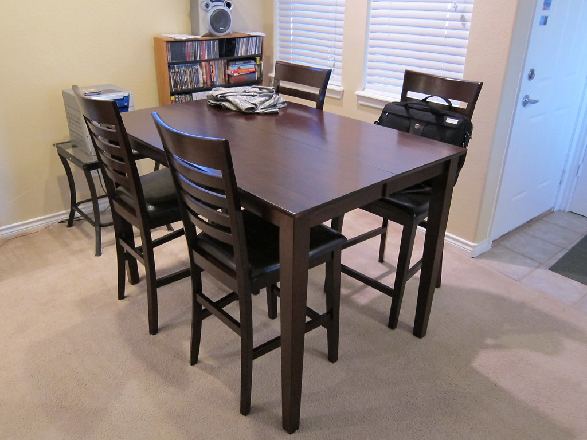
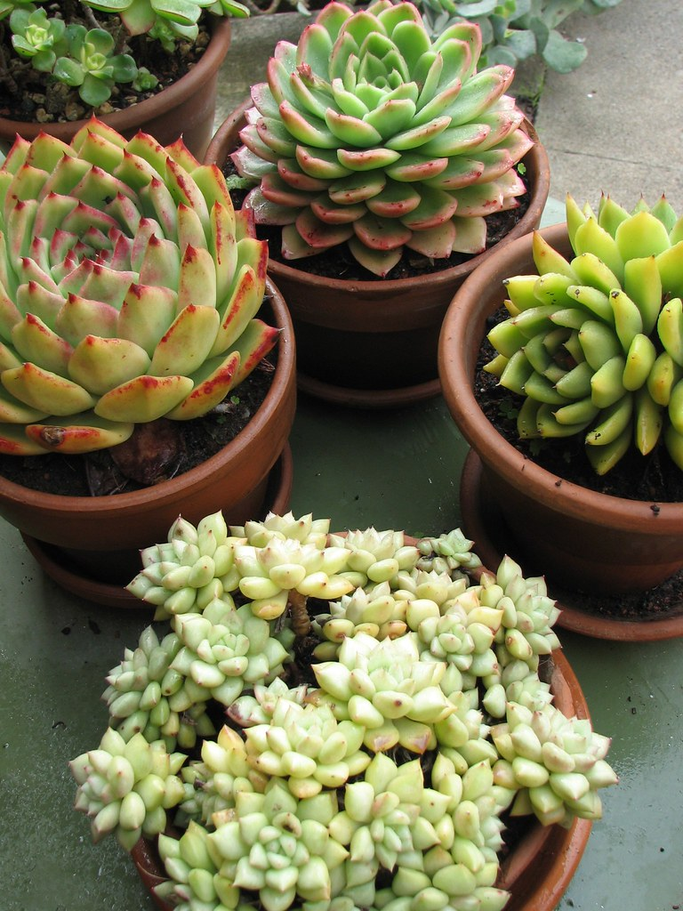

【2026年】引っ越し祝いのおすすめギフトに喜ばれるプレゼント5選｜友人別おすすめ

結論：迷ったらこれ
名入れタンブラー(サーモス・スタンレー)
引っ越し祝いには、相手の新しい生活を祝う気持ちを込めたプレゼントを選びます。友人へのおすすめギフトを探している方におすすめのアイテムを紹介します。
この記事では、友人への引っ越し祝いのおすすめギフトを5選紹介します。
選び方のポイント
引っ越し祝いのギフトを選ぶ際には、相手の趣味やライフスタイルに合ったものを選ぶことが大切です。例えば、料理が好きな友人には、キッチン用品が喜ばれるでしょう。
また、引っ越し祝いのギフトには、相手の新しい生活を祝う気持ちを込めることが重要です。

1. 名入れタンブラー(サーモス・スタンレー)
¥3,000〜¥8,000
名入れタンブラーは、友人の新しい生活を祝う気持ちを込めたギフトです。サーモス・スタンレーのタンブラーは、高品質で長持ちすることで知られています。

2. ワインセット(ニコラス・フォーセット)
¥5,000〜¥10,000
ワインセットは、友人の新しい生活を祝う気持ちを込めたギフトです。ニコラス・フォーセットのワインは、高品質で味わい深いことで知られています。

3. アロマディフューザー(ヤンキー・キャンドル)
¥2,000〜¥5,000
アロマディフューザーは、友人の新しい生活を祝う気持ちを込めたギフトです。ヤンキー・キャンドルのアロマディフューザーは、高品質で長持ちすることで知られています。

4. ブックエンドテーブル(イケア)
¥1,000〜¥3,000
ブックエンドテーブルは、友人の新しい生活を祝う気持ちを込めたギフトです。イケアのブックエンドテーブルは、高品質で機能的であることで知られています。

5. 植物ポット(ラウンドフォー)
¥1,000〜¥3,000
植物ポットは、友人の新しい生活を祝う気持ちを込めたギフトです。ラウンドフォーの植物ポットは、高品質でデザイン性があることで知られています。
おすすめギフト
ここでは、友人へのおすすめギフトを5選紹介します。
ギフトの意味
ギフトは、相手への感謝や祝福の気持ちを表すものです。引っ越し祝いのギフトには、相手の新しい生活を祝う気持ちを込めることが重要です。
まとめ
Okuriteでは、贈る相手やシーンに合わせて
ぴったりのギフトを簡単に探せます。
まとめ
引っ越し祝いのギフトを選ぶ際には、相手の趣味やライフスタイルに合ったものを選ぶことが大切です。
友人の新しい生活を祝う気持ちを込めたギフトを選びましょう。